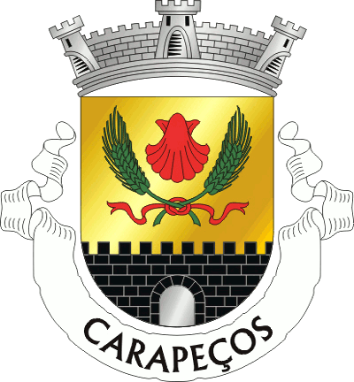
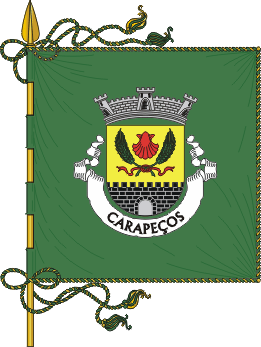

Carapeços
Igrejas e Capelas
Igreja de S.Tiago
A Igreja de S.Tiago localiza-se na freguesia de Carapeços, concelho de Barcelos, distrito de Braga, em Portugal.
Sobre a Freguesia
| Administração | |
| Tipo: | Junta de Freguesia |
| Presidente: | Hélder Duarte Grácio Tomé (PS) |
| Demografia | |
| Área | |
| Total: | 8,12 km2 |
| População (2011) | |
| Total: | 2 277 |
| Densidade: | 280,4 hab/km2 |
| Outras Informações | |
| Email: | carapecos.jf@maisbarcelos.pt |
| Website: | jf-carapecos.pt |
| Santo Padroeiro: | S.Tiago |
| Festividades | |
| S. Tiago: | 25 de Junho |
Heráldica
Os Símbolos Heráldicos da Freguesia de Carapeços constituídos por Brasão, Bandeira e Selo foram escolhidos e aprovados pela Junta de Freguesia, presidida por Francisco de Assis Real Tomé, em reunião extraordinária do Executivo da Junta, realizada a 20 de Fevereiro de 2001. A escolha foi feita de entre várias propostas apresentadas pela empresa da especialidade, a Diácria Editora Lda. a quem tinha sido encomendado o trabalho de ordenação, que se baseou no estudo e na interpretação da história conhecida da freguesia. Nesse mesmo dia, 20 de Fevereiro de 2001, e após a competente aprovação, foram os símbolos enviados à Comissão de Heráldica dos Arqueólogos Portugueses, para emissão do respectivo parecer, nos termos da Lei nº 53/91 de 7 de Agosto.
Esse parecer, favorável, foi emitido vinte meses depois, a 7 de Outubro de 2002, tendo a Assembleia de Freguesia de Carapeços, na posse desse parecer obrigatório, aprovado finalmente o estabelecimento dos símbolos heráldicos da freguesia de Carapeços, em reunião de 26 de Dezembro 2002, mediante proposta na sequência da ordenação e do parecer recebidos da anterior Junta, e enviada por esta, agora, presidida por Bartolomeu Correia Batista Barbosa, feito nos termos da alínea q) do nº. 2 do artigo 17º da Lei nº 169/99, de 18 de Setembro, assim os oficializando e tornando públicos.
O trabalho de pesquisa e ordenação feito pela Diácria Editora e elaborado segundo as regras muito restritas da lei quanto à disposição da simbologia e número de cores elegíveis teve a colaboração na primeira reunião efectuada, e como convidados da Junta, dos Srs. P. Alcino da Cunha Pereira e Manuel da Costa Pereira que deram as suas opiniões para as propostas de trabalho. As restantes reuniões com a Junta decorreram durante o final dos anos de 2000 e início de 2001.

Brasão - O brasão é composto por escudo de ouro, vieira de vermelho entre duas espigas de centeio verde, com os pés passados em aspa e atados de vermelho; em campanha, muralha negra, aberta e lavrada de prata firmada. Coroa mural de prata de três torres. Listel branco, com a legenda a negro: "Carapeços".

Simbologia Presente no Brasão:
As espigas de centeio representam as atividades económicas implantadas na freguesia, dando maior destaque à agricultura. Vieira representa o orago da freguesia, S. Tiago.
O pano de muralha representa o património arqueológico da freguesia de Carapeços, no qual se destaca a citânia no sítio de Castro.